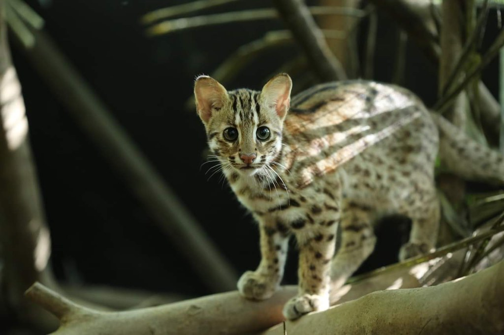

|  | 石虎（學名：Prionailurus bengalensis，英語：leopard
cat）又名豹貓、狸貓、山貓、錢貓，是分布於季風亞洲的貓科石虎屬物種。其種加詞「bengalensis 」意為「孟加拉的」。
石虎乃肉食性夜行動物，多在晚上或清晨於郊外出沒，通常以嚙齒類、鳥類、魚類、爬行類及小型哺乳動物為食。除了交配季節外，它們一般為獨處。石虎的妊娠期為65-70天，每胎2-4個後代。 根據國際自然保護聯盟2015年版資料顯示，石虎生長於海拔高度0公尺至3240公尺，在大部分情況下，石虎能使用退化的森林或經人工開墾的土地作為棲息地，如油棕園和甘蔗園。 |
治時期狩獵調查曾有一年有1150隻的紀錄，不過，在面臨低海拔淺山棲地快速消失、及狩獵壓力以及中毒死亡，開始在台灣各地區陸續減少然後區域性滅絕，現今僅存苗栗、台中與南投三縣市淺山地區仍有石虎出沒，數量可能已少於500隻。